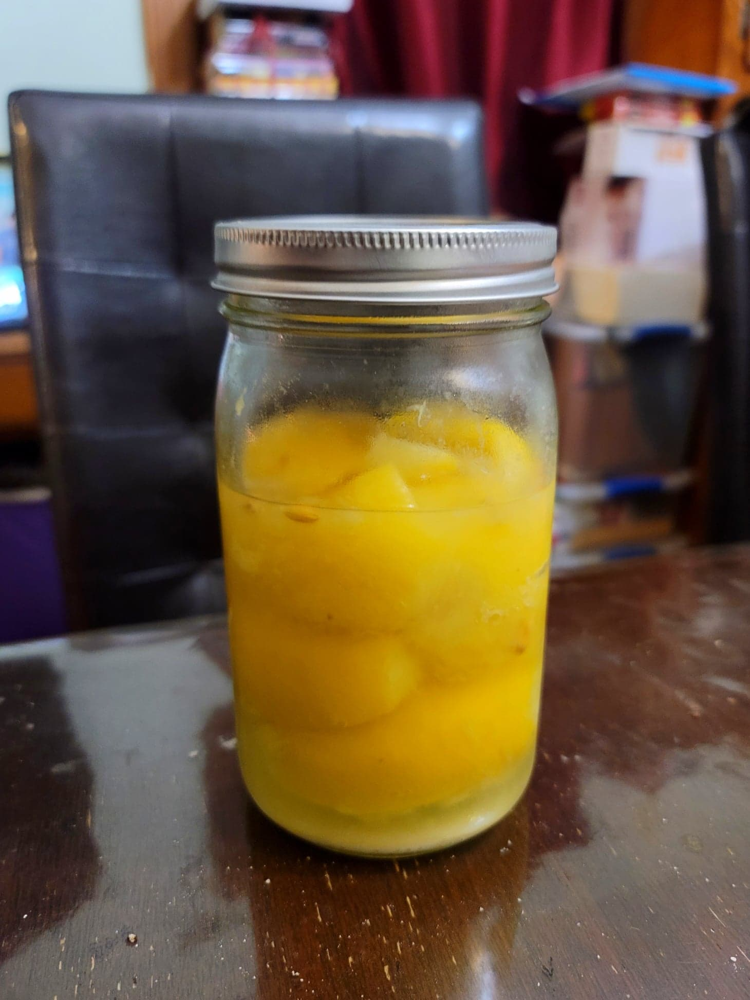

Hamad M’rakhad (Preserved Lemons)

Ingredients:
- Lemons, preferably Meyer lemons
- Kosher salt
Instructions:
- To prepare the lemons, start by trimming off both nib ends of each lemon, making sure not to cut deelp enough to expose the flesh.
- Then make two deep cuts to almost quarter the lemons, cutting about 3/4 of the way. Then heavily coat the inside of the lemon with salt, as much as possible.
- Pour some salt into sterilized jar. Then alternate between adding a lemon and then some more salt, until no more lemons can fit into the jar. Compress the lemons into the jar as much as possible. If the lemons are not submerged completely in their own juice, add some more lemon juice to cover. Top with a little more salt and then loosely cover. Let ferment for 3-4 weeks or until the lemons have softened to preference.